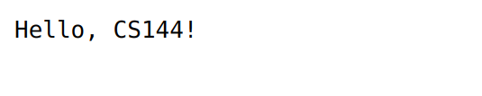
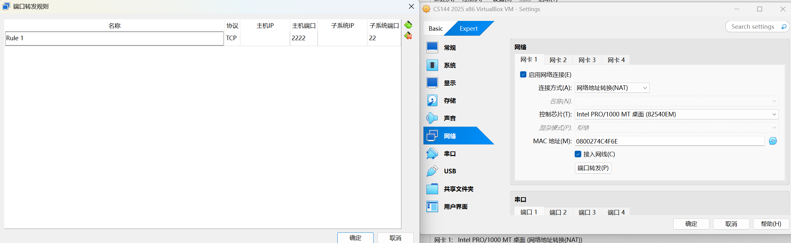

Lab2 Webget 与字节流（ByteStream）
注意
实验报告提交 ddl 为 2025 年 10 月 26 日 23:59，请同学们留意。
说明
Lab2-5与CS144的实验内容对齐，我们将实现一个完整的TCP/IP协议栈。
1 环境配置
为了避免不必要的问题，我们推荐你使用虚拟机和CS144官方提供的镜像完成实验。
1.1 安装VirtualBox虚拟机并下载虚拟机镜像
VirtualBox：https://www.oracle.com/cn/virtualization/virtualbox/
虚拟机镜像：https://stanford.edu/class/cs144/vm_files/cs144-fall-2025-x86.ova （很大的文件，建议预留1-2小时下载）
{kind=link}
注意
如果你有一台2020-24的MacBook（带有ARM64M1芯片），VirtualBox将无法成功运行，请安装UTM虚拟机和ARM64虚拟机映像
ARM64虚拟机镜像：https://web.stanford.edu/class/cs144/vm_files/cs144-fall-2025-arm64.utm.tar.gz
1.2 导入CS144镜像
启动 VirtualBox ，你会看到如下界面：
{kind=link}
点击“导入”，打开如下窗口。输入或选择你的 cs144_vm.ova 镜像文件。默认设置不需要改变，点击“完成”导入镜像。
{kind=link}
在左侧选择刚刚导入的虚拟机，点击启动。
{kind=link}
虚拟机将启动到文本界面，你的用户名是 cs144，默认密码也是 cs144。
1.3 连接你的虚拟机
我们推荐你使用 ssh 连接你的虚拟机，你可以将你的虚拟机使用 ssh 集成在 vscode 来进行编辑。虚拟机镜像已设置后，VirtualBox 会将主机上 localhost:2222 的 TCP 连接转发到虚拟机的 22 号端口 (ssh)。虚拟机运行时，你可以按如下方式连接：（如果你在配置ssh时出现问题，可以参考一下文档末尾的注意事项，可能会帮到你）
ssh -p 2222 cs144@localhost
1.4 安装所需的包
下面这些命令会安装实验中需要用到的包：
sudo apt update && sudo apt install git cmake gdb build-essential clang \
clang-tidy clang-format gcc-doc pkg-config glibc-doc tcpdump tshark libpcap-dev
2 使用网络
在正式进行编码工作之前，我们首先使用应用层程序访问一个网页。
2.1 浏览器访问一个网页
在一个浏览器中，访问 http://cs144.keithw.org/hello ，你将会看到如下的结果。浏览器是典型的应用层程序，它会帮你构造符合 HTTP 协议的请求，发给服务器，然后把响应解析渲染成网页。 
{kind=link}
2.2 利用telnet抓取一个网页
Telnet 也是应用层程序，只不过当你使用 telnet 连接到服务器时，需要手动输入 HTTP 报文。
-
在你的虚拟机中运行
telnet cs144.keithw.org http [Enter]命令。它告诉 telnet 程序在你的计算机与另一台计算机（名为cs144.keithw.org ）之间打开一个可靠的字节流，并在这台计算机运行一个特定的服务：“http”服务。如果你的虚拟机已经被正确设置且连接网络，你将会看到按住$ telnet cs144.keithw.org http Trying 104.196.238.229... Connected to cs144.keithw.org. Escape character is '^]'.Ctrl并按下]，接着输入close退出。 -
输入
GET /hello HTTP/1.1 [Enter]，这告诉服务器URL的路径部分。 - 输入
Host: cs144.keithw.org [Enter]，这告诉服务器URL的主机部分。 - 输入
Connection: close [Enter]，这告诉服务器你已经完成了请求，服务器将在回应后断开连接。 - 多输入一次
[Enter]，发送一个空行并告知服务器你已经完成了输入。
注意
输入这几条指令时一定要快，不然连接会断掉。
输入成功后，你将会看到与浏览器展示的结果相同的回复。
GET /hello HTTP/1.1
Host: cs144.keithw.org
Connection: close
HTTP/1.1 200 OK
Date: Thu, ...
Server: Apache
Last-Modified: Thu, 13 Dec 2018 15:45:29 GMT
ETag: "e-57ce93446cb64"
Accept-Ranges: bytes
Content-Length: 14
Connection: close
Content-Type: text/plain
Hello, CS144!
Connection closed by foreign host.
3 Webget
如果你继续探索上述两个应用层程序，你会发现它们都建立在 socket 之上。Socket（套接字），是传输层提供给应用层的接口，对于应用层而言，是对TCP/UDP这些传输层协议的抽象封装。应用层程序通过 socket 建立连接，发送和接受数据。在这一章中，你将编写一个简短的应用层程序：webget，调用Linux内核提供的 stream socket 类来实现。
3.1 建立仓库
- 在你的虚拟机上，输入
git clone https://github.com/sibo715/zju-comnet-labs.git [Enter]来抓取项目初始代码文件。 - 输入
cd zju-comnet-labs [Enter]进入项目目录。 - 输入
mkdir build [Enter]构建 build 目录。 - 输入
cd build [Enter]进入 build 目录。 - 输入
cmake .. [Enter]搭建系统。 - 输入
make [Enter]命令编译源代码。（这里注意你每次对项目进行了修改都需要重新运行make命令）
提示
由于http连接github时常不稳定，我们推荐使用ssh来管理你的git仓库，可参考 https://zhuanlan.zhihu.com/p/628727065
3.2 OS Stream Socket
Linux内核提供了 stream socket ，它像一种文件描述符。当两个 stream socket 连在一起时，写入其中一个socket的字节最终将被另一个socket以相同的顺序读出。下图描述的是基于TCP/IP协议的 Client-Server 通信流程。
-
服务器端是等待连接并提供服务的程序
-
socket: 创建一个套接字，这是网络通信的端点
-
bind: 将套接字和一个本地地址（IP地址和端口号）绑定
-
listen: 使套接字进入监听状态，等待客户端的连接请求
-
accept: 阻塞等待客户端连接。一旦接收到一个连接请求，它会创建一个新的套接字来处理这个客户端的通信
-
while(true): 表示服务器通常会进入一个循环，不断地调用
accept来等待并处理新的客户端连接 -
read/write: 与已连接的客户端进行数据读取和写入的通信
-
close: 关闭与当前客户端通信的套接字
-
-
客户端是发起连接并请求服务的程序
- socket: 创建一个套接字
- connect: 向服务器端的特定地址和端口发起连接。一旦连接成功，就可以开始数据传输
- write/read: 通过已建立的连接向服务器发送数据（write）和从服务器接收数据（read）
- read EOF: 客户端读取到文件结束符，表明服务器关闭了连接或关闭了写入端
- close: 关闭套接字，终止与服务器的连接
{kind=link}
3.3 实现 webget
请阅读 libsponge/util/socket.hh 和 libsponge/util/file_descriptor.hh 的 public interfaces（请注意 Socket 继承于 FileDescriptor，TCPSocket 继承于 Socket ） 。熟悉 socket 各接口的定义以及如何调用。
现在我们要调用 TCPSocket 的接口来实现 webget 这个应用层程序 ，就像前面的 telnet 一样用于抓取网页。
-
在编辑器中打开
/path/to/zju-comnet-labs/apps/webget.cc。 -
完成 get_URL 函数（请使用 HTTP请求的格式并使用 TCPSocket 和 Address 类）。具体来说，你需要通过socket建立连接，写入请求并最终读出返回的数据。
注意
-
在HTTP中，每行必须以“\r\n”结尾。
-
Connection:close这句代码必须包含在客户端的请求中。
-
确保从服务器读取和打印所有的输出，直到套接字到达“EOF”，即文件的末尾。
-
-
使用
make重新编译你的项目。 -
输入
/path/to/zju-comnet-labs/build/apps/webget cs144.keithw.org /hello [Enter]来测试你的程序。 -
如果你觉得上面的输出结果是正确的，你可以输入
make check_webget [Enter]进行自动测试（测试样例路径：/path/to/zju-comnet-labs/tests/webget_t.sh）。注意
如果这里显示timeout，记得关闭vpn
在完成 get_URL 函数后，你将看到如下的结果：
$ make check_webget
[100%] Testing webget...
Test project /path/to/zju-comnet-labs/build
Start 31: t_webget
1/1 Test #31: t_webget ......................... Passed 1.19 sec
100% tests passed, 0 tests failed out of 1
Total Test time (real) = 1.19 sec
[100%] Built target check_webget
4 可靠的字节流
在前一章节中，我们已经调用 socket 接口完成了简易的 webget 应用程序。在这一章中，我们将实现一个简化版的 socket 读写缓冲区（ByteStream）。如下图所示，在建立连接后，TCP会维护发送（send）和接收（recv）两个缓冲区。以recv缓冲区为例，client发送给server的数据将依次写入缓冲区，而server可以按需读取所需的数据。
{kind=link}
在这一章中，你将自己动手实现一个字节流。字节在“输入”端写入，并可以按照相同的顺序从“输出”端读取。writer 可以结束输入，之后不能再写入任何字节。reader 读到流的末尾时，会遇到 EOF （end of file），之后不会再读取任何字节。
你的字节流同时也要考虑容量控制，意味着它将在初始化时给定一个容量（capacity）：可以存入内存的最大字节数。你的字节流需要根据这个容量限制 writer 的写入，达到容量后不能继续写，而当 reader 从流中读出字节时，writer 才能继续写。
打开 libsponge/byte_stream.hh 以及 libsponge/byte_stream.cc 文件，设计私有成员并完成接口的实现。接口可以分为4类：
- 构造函数
ByteStream(const size_t capacity); // 初始化所有需要的私有成员（自己设计并添加） - Writer
size_t write(const std::string &data) //将data尽可能多地写入stream，返回写入stream的字节数。 size_t remaining_capacity() const //返回stream中剩余空间的字节数。 void end_input() //给私有变量赋值为true，代表输入已经完成 void set_error() { _error = true; } //若stream遇到错误，则私有变量_error赋值true - Reader
std::string peek_output(const size_t len) const //返回len长度的str void pop_output(const size_t len) //从stream中pop出长度为len的str std::string read(const size_t len) //先peek再pop bool input_ended() const //若输入结束则返回true bool error() const { return _error; } //如果stream遇到error，则返回true size_t buffer_size() const //返回当前可以从stream中读取的最大长度的str bool buffer_empty() const //如果stream当前空了，返回empty bool eof() const; //如果输入结束且输出达到末尾，返回true - General Accounting
size_t bytes_written() const; //总共写入的字节数 size_t bytes_read() const; //总共pop出的字节数
当你开发完成并重新编译项目后，你可以输入 make check_lab0 [Enter] 进行自动测试。你将看到如下的结果：
$ make check_lab0
[100%] Testing Lab 0...
Test project /path/to/zju-comnet-labs/build
Start 26: t_byte_stream_construction
1/9 Test #26: t_byte_stream_construction ....... Passed 0.00 sec
Start 27: t_byte_stream_one_write
2/9 Test #27: t_byte_stream_one_write .......... Passed 0.00 sec
Start 28: t_byte_stream_two_writes
3/9 Test #28: t_byte_stream_two_writes ......... Passed 0.00 sec
Start 29: t_byte_stream_capacity
4/9 Test #29: t_byte_stream_capacity ........... Passed 0.25 sec
Start 30: t_byte_stream_many_writes
5/9 Test #30: t_byte_stream_many_writes ........ Passed 0.00 sec
Start 31: t_webget
6/9 Test #31: t_webget ......................... Passed 1.09 sec
Start 53: t_address_dt
7/9 Test #53: t_address_dt ..................... Passed 0.01 sec
Start 54: t_parser_dt
8/9 Test #54: t_parser_dt ...................... Passed 0.00 sec
Start 55: t_socket_dt
9/9 Test #55: t_socket_dt ...................... Passed 0.00 sec
100% tests passed, 0 tests failed out of 9
Total Test time (real) = 1.38 sec
[100%] Built target check_lab0
提示
若仍然对接口的实现逻辑不清楚的，可以查看测试样例从而加深理解。
-
/path/to/zju-comnet-labs/test/下的byte_stream_test_harness.hh和byte_stream_test_harness.cc是所有测试方法的声明和实现。 -
/path/to/zju-comnet-labs/byte_stream_xxx.cc为测试样例
注意
- 如果无法使用ssh连接虚拟机，显示“Connection Refused"，可以在VirtualBox的虚拟机设置里手动加一下端口转发，如下图所示。 
- 如果你使用的MacBook，在UTM虚拟机中找不到端口转发的选项，可以在设置中将网络模式调整为模拟VLAN。
{kind=link}